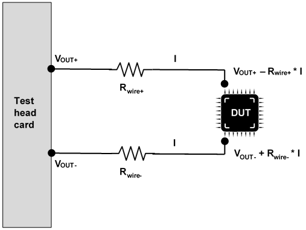
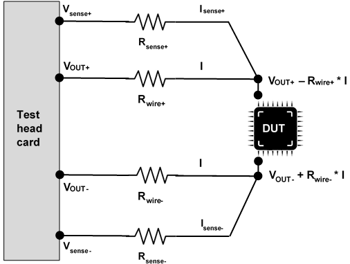
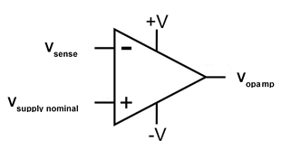

Remote sensing
With remote sensing, also know as Kelvin sensing, one or two additional sense lines are used for measuring the voltage directly at the DUT. This eliminates the voltage drop caused by the current flowing through the two force lines. Remote sensing is used for pure voltage measurement tasks, but also to increase the accuracy of forcing voltages at higher currents.
The remote sensing feature is not available in SmarTest 8.4.4 but subject to a later SmarTest release.
Remote sensing is not supported in SmarTest 7.
Basic principle
The voltage drop caused by the wiring makes the power supply voltage observed across the DUT less than the one of the power supply provided by the test head card. The desired voltage difference across the DUT generated by the force lines
VOUT+ - VOUT-
turns out to be
(VOUT+ - Rwire+ * I) - (VOUT- + Rwire- * I)
as shown below.

The first step to have this situation relieved is to measure the voltage drop using a 4-wire Kelvin type connection as shown below.

Sense ports are connected to DUT pins as close as possible to the DUT to measure the voltages at the DUT pins. The sense ports have high input impedance. The sense current is negligible compared to the current on the related force line, that is the voltage drop across the resistances of the sense wire is negligible as well. The voltages sensed at the measurement ports are about identical with the ones at the DUT pins:
Vsense+ = VOUT+ - Rwire+ * I
Vsense- = VOUT- + Rwire- * I
The second step is to use the sensed voltages to regulate the forced voltages to have the intended voltages across the DUT. A sensed voltage is connected to the negative port of a differential amplifier as shown below.

The regulation is done automatically, based on the equation:
Vopamp = 1 * (Vsupply nominal - Vsense), for instance
Vopamp = VOUT+ - (VOUT+ - Rwire+ * I) = + Rwire+ * I. The latter can be used to compensate for the drop - Rwire+ * I.
There is no need for a manual calculation of the necessary compensation figures.
Functional changes
- Introduced in SmarTest 8.4.0
- SmarTest 7.10.2: Remote sensing is not applicable in SmarTest 7.10.2.